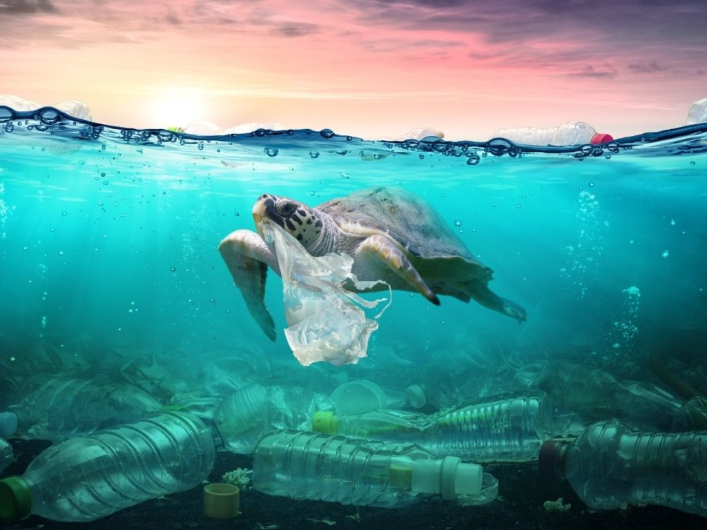
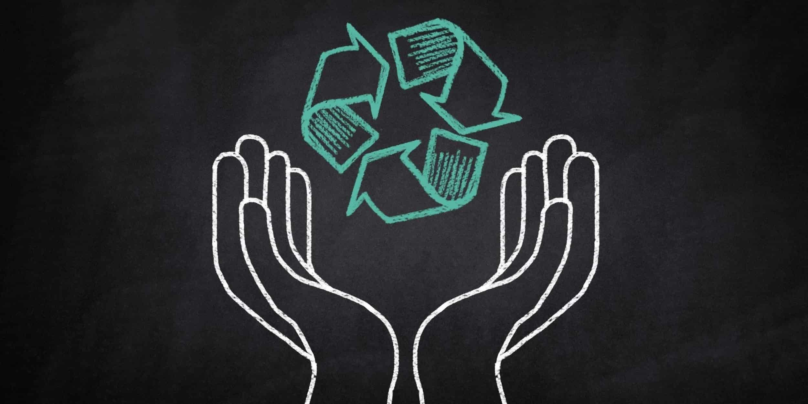

Setiap tahunnya, jutaan ton sampah plastik mencemari laut dan daratan Indonesia. Minimnya pengelolaan serta kesadaran masyarakat menjadi penyebab utama meningkatnya volume sampah.

Dampak Buruk Sampah Plastik
Mengancam kehidupan laut seperti ikan dan penyu
Mencemari air dan tanah
Berpotensi merusak rantai makanan
Menimbulkan penyakit akibat bahan kimia berbahaya
Solusi dan Pencegahan
Mengurangi penggunaan plastik sekali pakai
Gunakan produk daur ulang dan ramah lingkungan
Mengikuti program daur ulang dan bank sampah
Mengedukasi masyarakat sekitar secara aktif

Apa yang Bisa Kamu Lakukan?
Mulailah dari hal kecil: membawa tas belanja sendiri, menghindari sedotan plastik, memilah sampah di rumah, dan menyebarkan informasi ini kepada orang lain.
Kuis Edukasi!
Pertanyaan: Berapa lama plastik bisa terurai di alam?